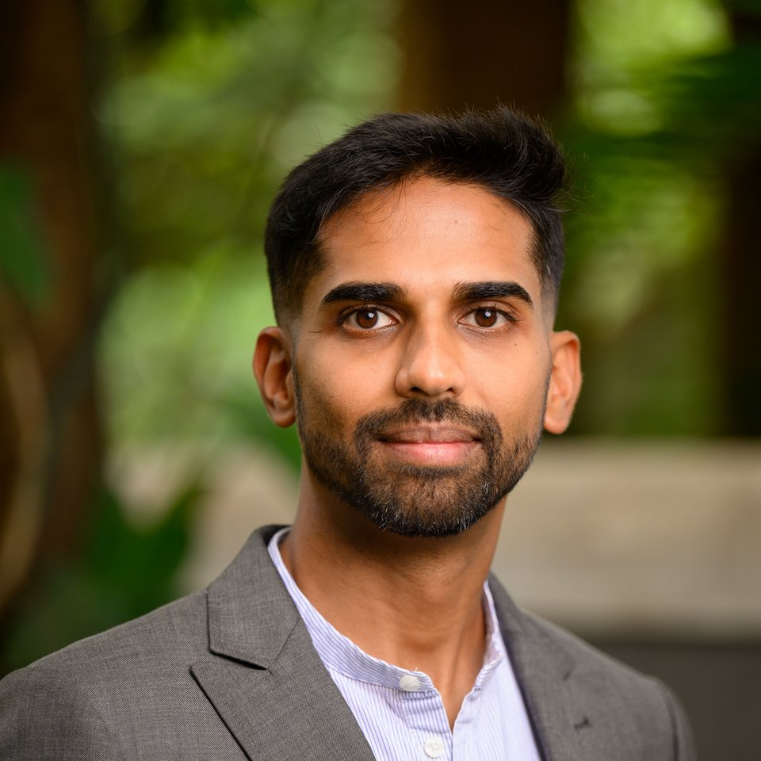

La salud antes que el éxito. La conciencia antes que la acción.
La mayoría de los procesos de salud empiezan con un plan. Este empieza con una pregunta: ¿comprendes realmente tu cuerpo, tus hábitos y la vida en la que intentas encajarlos? Humankind Movement es el pensamiento detrás del coaching de Ajith Jagadish. Los programas, la escritura y el coaching neurodivergente se construyen sobre esa base.

La filosofía no cambia.
Cómo se usa, sí.
Humankind Movement trabaja con dos grupos de personas distintos, y se niega a fingir que necesitan que se les diga lo mismo de la misma manera.
Coaching general
Personas de todas las edades, individual o en grupo. Fuerza, movilidad, recuperación pre y posparto, cambio de estrés y hábitos, programas corporativos y comunitarios. Espacio para la metáfora, la reflexión y un despliegue más lento.
Coaching de Movimiento para Personas Neurodivergentes
Coaching de movimiento para personas neurodivergentes de todas las edades, en grupo e individual. Lenguaje concreto, necesidades sensoriales y de regulación primero, y progreso medido en sus propios términos, no frente a un patrón neurotípico.
Coaching personalizado, construido en torno a la persona
Se ofrece online para personas de todo el mundo, o presencial para clientes en Bangalore, de todas las edades. Cada programa se construye en torno a la persona, no solo el objetivo, porque no hay dos cuerpos ni dos vidas iguales.
- Historial corporal y de movimiento
- Estilo de vida y horarios
- Capacidad de recuperación
- Bienestar emocional y mental
- Hábitos y rutinas diarias
- Objetivos y retos individuales
Cuatro trazos, deliberadamente no unidos
Mira de cerca la marca y notarás que las cuatro líneas nunca se encuentran en el centro. No es un accidente de diseño. Es la idea. Cada trazo se sostiene por sí mismo, del mismo modo que cada una de estas cuatro áreas necesita su propia atención en lugar de una idea general de «salud».

Movimiento
Construir un cuerpo que se sienta capaz, resiliente y adaptable.

Sueño
Recuperación, restauración y regulación del sistema nervioso.

Alimentación
Conciencia sobre la nutrición cotidiana como una parte del todo.

Tiempo a solas contigo mismo
Reflexión, arraigo emocional y construcción de una relación contigo mismo.
El movimiento y el sueño son los trazos de tinta. La alimentación y el tiempo a solas son los trazos de terracota. Cuatro líneas separadas, cuatro prácticas separadas. Ninguna sustituye a las demás.
Algunas de las personas que han hecho este trabajo
4.9★ de media en 27 reseñas de Google
«Empecé a trabajar con Ajith en el posparto, y su experiencia me ayudó a recuperar fuerza, confianza y bienestar general. También está guiando con pericia mi entrenamiento de maratón.»
— Akshatha Gunashekar«A diferencia de otros que solo se centran en tratar los síntomas, Ajith se toma el tiempo de profundizar y encontrar la causa raíz de cualquier molestia o dolor.»
— Kunal Raheja«Tuve una cirugía de reconstrucción de LCA y LCM y, aún después de meses de fisioterapia, no lograba recuperarme del todo. Ajith cambió todo por completo — ahora puedo correr, jugar y hacer de todo.»
— Jyoti MantriUn compañero de viaje, no una autoridad que ya ha llegado
Ajith pasó más de una década en desarrollo de negocio antes de pasarse al coaching de salud y bienestar. Es un Especialista Certificado en Biomecánica Humana y un atleta nacional e internacional que ha representado a la India, y sigue pensando en este trabajo como algo que recorre junto a las personas a las que da coaching, no algo que ha dominado y transmite desde arriba.
La salud es personal. El coaching también debería serlo.
Coaching online para personas de todo el mundo, coaching presencial para clientes en Bangalore, y programas para empresas y comunidades.